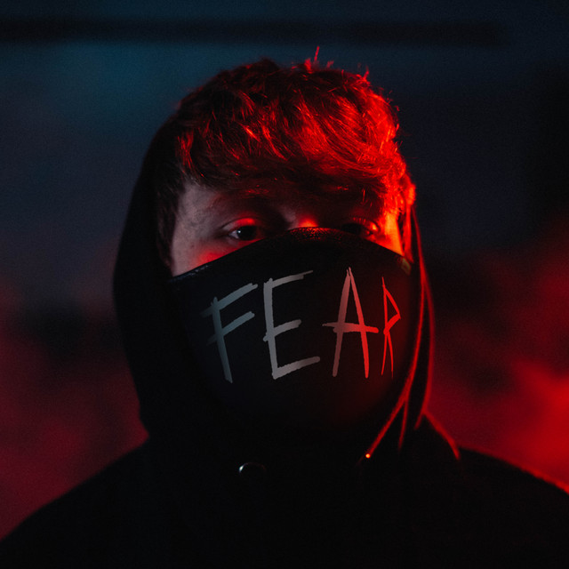

El rap es un género musical que surgió a principios de los años ochenta en los barrios marginales de la ciudad de Nueva York (Estados Unidos) entre jóvenes de ascendencia hispana. Vinculado a los ambientes de la cultura hip-hop, a imagen y semejanza de esta integra diversas corrientes, como el break dance music, el electro, el graffiti urbano o el scratch. El arte del rap está ligado a un protagonista principal, la figura del MC. Coke La Rock, Melle Mel y Kurtis Blow son algunos de los primeros pioneros de la escena neoyorquina de la música urbana. Ellos fueron los encargados de sentar las bases de una de las culturas más importantes del género musical actual. Sirvieron de ejemplo para el universo del hip hop en general y para la llegada de grandes artistas y precursores del rap a nivel internacional como 2pak, Rakim y The Notorious B.I.G. Cualquiera de los tres están considerados actualmente como auténticas leyendas de este estilo underground.
|  |
| Es un artista, YouTubeCreador, de musica rap, hip hop. Sus primeras canciones fueron subidas a su canal de YouTube y se trataban pequeños singles con pocas visitas para esos tiempos. Hoy en dia, cuenta con mas de 1 millon de subscriptores en su canal, y en cuanto a su musica, fue evolucionando, contando con mejores beats en instrumentacion y publicando albumes que se encuentran disponibles para ser escuchados tanto en Youtube, como en Spotify. |
| Trauma (Album: Lonely Vibes) |
| Es un proyecto musical estadounidense de Bryce Savage (nacido como Brandon Horth) que originalmente incluía a Cameron Wales. Produjeron remixes y canciones originales caracterizadas por una mezcla de géneros electrónicos y rap. Antes de que Savage continuara con el proyecto por su cuenta, escribió letras y cantó mientras Wales creaba instrumentales y realizaba la edición. Han lanzado muchas de sus canciones libres de regalías (sin copywrite) para que los creadores de contenido y similares puedan usarlas. Avage y Wales se conocieron en la escuela secundaria cuando tenían 15 años. En ese momento, estaban involucrados en una banda de punk rock. A partir de entonces, ambos abandonaron la banda y comenzaron a hacer su propia música. Sin embargo, esta aún no era la creación de Neffex. Después de la secundaria, Wales se mudó a Los Ángeles y se distanció de Savage durante la universidad. Cuando Savage estaba en el último año de la universidad, habló con Wales y notaron que ambos estaban haciendo música en su tiempo libre. Después de la universidad, volvieron a reunirse en el condado de Orange y crearon el nombre "NEFFEX". |
| Are You Ok? |
| Artista del genero rap, hip hop. En sus canciones, usa una mezcla de sonidos electronicos y un canto melodico, aunque hay partes donde se le escucha rapeando. Sellos discográficos: Koze Music, RIPTIDE, Gold Sounds |
| Dead Man Walking (Album: Protector) |
| Cantante de R&B y rapero que encontró fama al grabar una canción de tiradera dirigida a Jake Paul llamada "It's Everyday Bro" en junio del 2017. Su primer sencillo oficial fue "We Die Too" el cual fue lanzado en enero del 2017. Tiene más de 140.000 seguidores en su cuenta de Instagram iamjakehill. |
| RUN UP! |